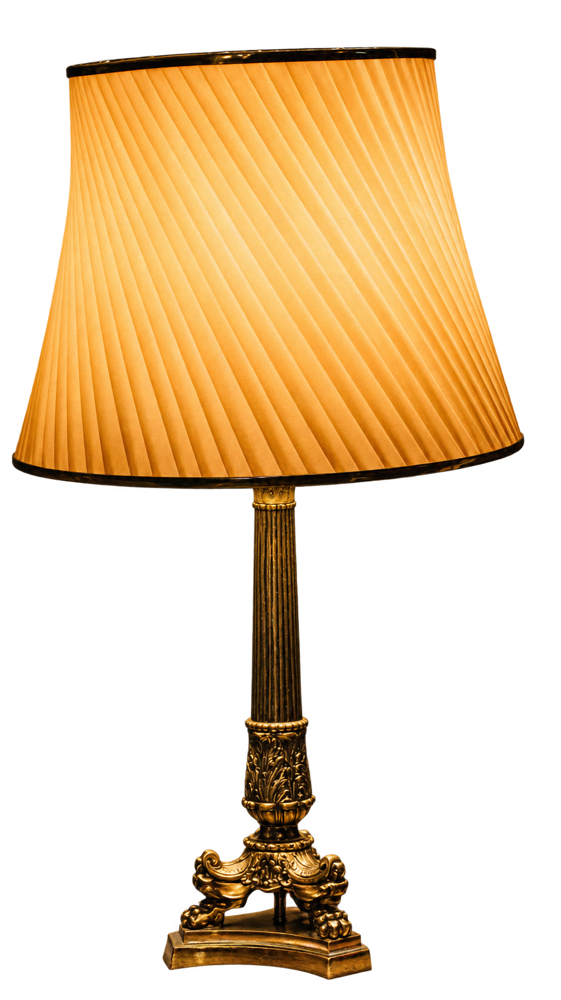
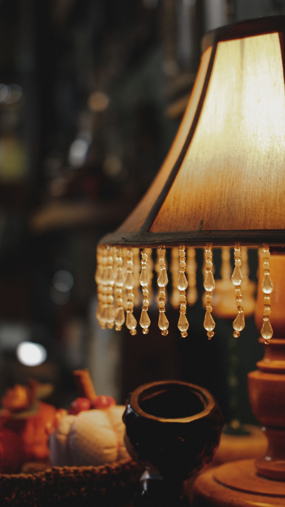

Doe de dag
maar uit.
Het mooiste uur begint met een zacht licht.
Ontdek de Avond-edit

Blijf nog even zitten.
Naast de stoel waar je graag leest. Op die tafel die nog wat aandacht kan gebruiken. De Avond-edit kijkt naar wat een lamp met een kamer doet.
Een warme gloed
Licht dat je favoriete hoek een eigen sfeer geeft.
Het zit in de kap
Kijk niet alleen naar de vorm, maar ook naar waar het licht valt.
Thuis, op zijn mooist.

Ontdek de Avond-edit